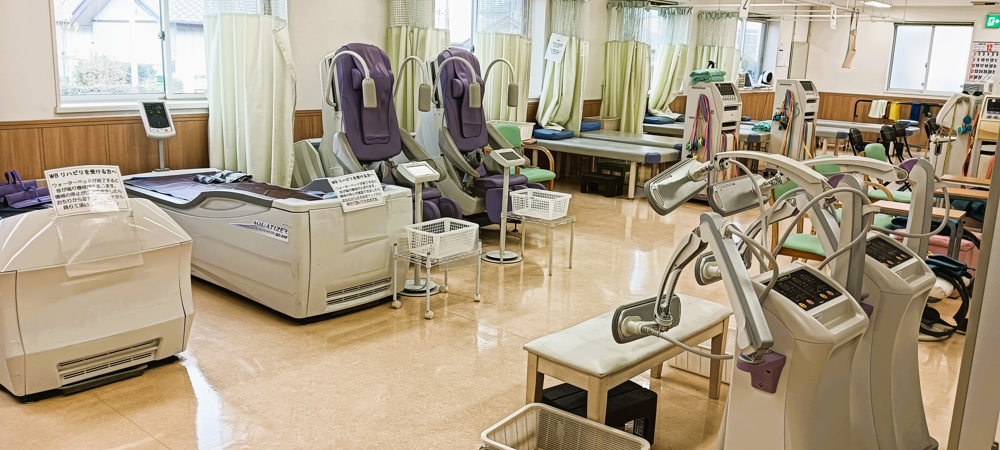

診療科目
- リウマチ科
- 整形外科
- リハビリテーション科
診療時間
| 曜日 | 午前 | 午後 |
|---|---|---|
| 月〜金 | 8:00 - 12:00 | 14:50 - 19:00 |
| 土 | 8:00 - 12:00 | 14:00 - 17:00 |
| 休診日 | 木曜日、祝祭日 | |
当院では、予約された患者様を優先的に診察しておりますが、予約をされていない場合でも対応させていただきます。
どうぞお気軽にご来院ください。
お願い
- アイドリング駐車は近隣の迷惑になるのでおやめください
- 駐車場前の道路での停車は、渋滞の原因となるためご遠慮いただき、速やかに駐車場内へお入りください。
- 院内での携帯電話の利用はご遠慮ください
お知らせ
- お知らせは今現在ありません。
院長紹介

院内の紹介

受付

待合室

リハビリで使用する医療機器と適応症状
体外衝撃波（ESWT）
- 足底筋膜炎
- テニス肘・ゴルフ肘
- 石灰沈着性腱板炎（肩の痛み）
- アキレス腱炎
- ジャンパー膝（膝蓋腱炎）
- 慢性的な筋・腱の炎症
干渉波（低周波治療器）
- 肩こり・腰痛
- 坐骨神経痛
- 頚椎症・頚肩腕症候群
- 慢性関節リウマチ
- 神経痛（坐骨神経痛・肋間神経痛）
超音波治療
- 捻挫・筋肉の損傷
- 腱鞘炎（ドケルバン病など）
- 骨折（治癒促進）
- 五十肩（肩関節周囲炎）
- 肉離れ
- スポーツ障害（靭帯損傷・腱炎など）
牽引治療（首・腰）
- 頚椎ヘルニア・腰椎ヘルニア
- 頚椎症・頚肩腕症候群
- 腰椎すべり症・分離症
- 坐骨神経痛
- 慢性腰痛
- 椎間板変性症
マイクロ波治療
- 慢性腰痛・肩こり
- 変形性膝関節症
- 神経痛（坐骨神経痛・肋間神経痛）
- 筋肉のこわばり・関節のこわばり
- リウマチによる関節痛
- 冷え症
ウォーターベッド（ウォーターマッサージ）
- 全身の疲労・倦怠感
- 自律神経の乱れ（ストレス・不眠）
- 血行不良による肩こり・腰痛
- 足のむくみ
- 筋肉の緊張による頭痛
骨折治療器（超音波骨折治療器）
- 骨折（治癒促進）
- 難治性骨折（偽関節）
- 疲労骨折
- 骨粗しょう症による骨折
- 手術後の骨癒合不全
※ 当院では理学療法士学生の実習を受け入れております。患者様にはご理解とご協力をお願い申し上げます。
アクセス
群馬総社駅から車で10分
八木原駅から車で7分
住所: 〒370-3601 群馬県北群馬郡吉岡町漆原1179
お問い合わせ
電話番号: 0279-25-8855